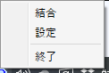
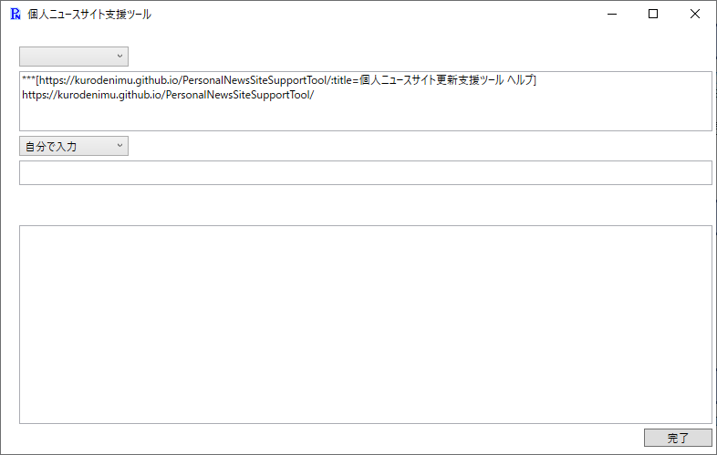
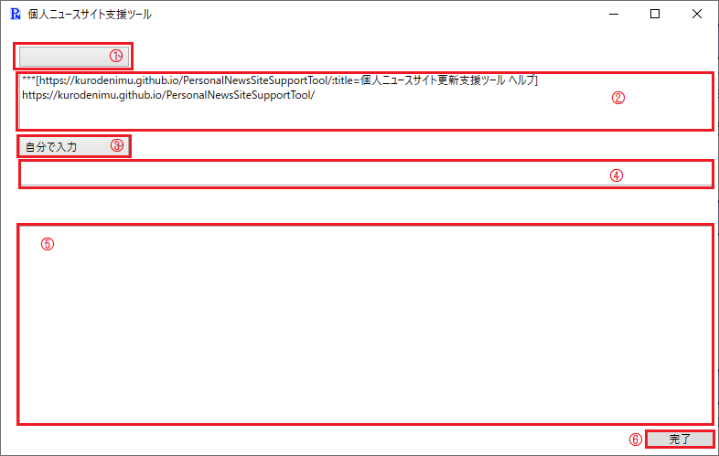

基本機能
タスクトレイ
起動すると以下のようなアイコンが表示されます。
右クリックすると以下のメニューが表示されます。

-
結合
カテゴリ毎に保存したファイルを一つのファイルに結合します。 -
設定
設定ウィンドウを開きます。 -
終了
アプリケーションを終了します。
コメント入力
クリップボードにあらかじめ設定したテキストが含まれていた場合、下記のようなウィンドウが開きます。

各部位の説明は以下の通りです。

-
①カテゴリ選択
あらかじめ設定したカテゴリから選択します。カテゴリを設定していない場合は選択不要です。 -
②ニュースURL
ウィンドウが開いた際のクリップボードの内容が表示されます。ここで内容を編集することも可能です。 -
③情報元選択
あらかじめ設定した情報元を選択します。自分で入力する場合は変更不要です。 -
④情報元入力欄
情報元を選択した場合、設定に応じた内容が表示されます。"自分で入力"を選択した場合、自分で入力することが出来ます。 また、この欄を省略した場合は情報元は出力されません。 -
⑤コメント入力欄
ニュースに対するコメントを入力する欄です。 -
⑥完了ボタン
入力が終わった際に押すボタンです。このボタンを押すと、入力された内容がファイルに保存されます。